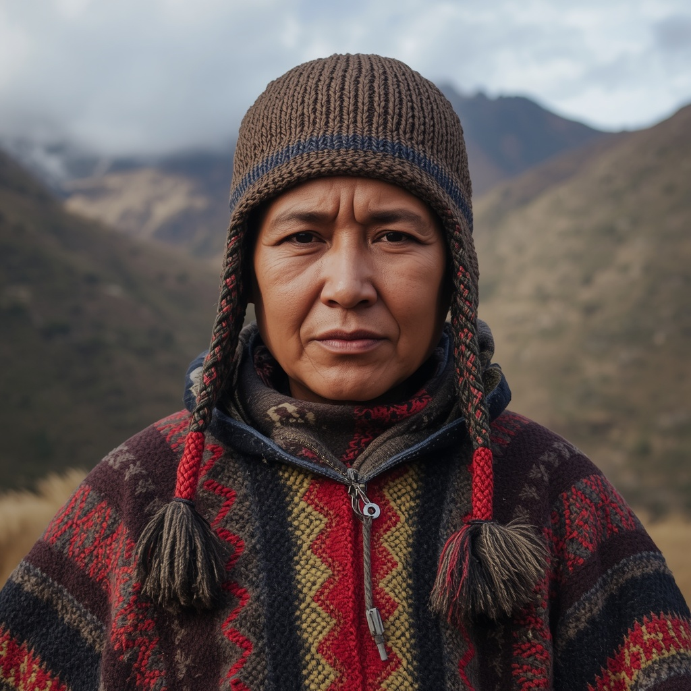

🧑🤝🧑 世界の民族・人びと
People of the World。国境を越えて暮らす人びとを、地域ごとに紹介します。伝統だけでなく、今の暮らしも一緒に。

ケチュア
🗣 使用言語
ケチュア語（諸方言）、スペイン語
👥 人口の目安
約1,000万〜1,100万人（ペルー約560万人、ボリビア約160万人、エクアドル約160万人）
👘 伝統衣装
男性は幾何学模様を織り込んだポンチョと膝丈の毛織りズボン、耳当て付きの編み帽子「チュヨ」を着用し、コカの葉を入れる小袋「チュスパ」を携える。女性は複数枚重ねたスカートとフェドーラ風の帽子（1920年代以降定着）、織り帯「チュンピ」を身につける。
🏠 住居
日干しレンガ（アドベ）や、木の枝に泥を塗る工法の壁に、藁やプーナ草（イチュ）で葺いた屋根を持つ家屋が伝統的な住居である。
🍲 食文化
ジャガイモ（数千種を栽培）、キヌア、トウモロコシを主食とし、干し肉「チャルキ」（英語のジャーキーの語源）、地面に穴を掘って蒸し焼きにする料理「パチャマンカ」、モルモット（クイ）やリャマ・アルパカの肉なども食される。
🎵 音楽・踊り
パンパイプ「シク」や太鼓「カハ」、弦楽器「チャランゴ」を用いた音楽が伝統的で、収穫祭や地域の祝祭で演奏される。
🎉 行事・祭り
インカ帝国の太陽神を祝う「インティ・ライミ（太陽の祭り）」がクスコを中心に現在も再現・開催され、代表的な祭礼として知られる。
🙏 信仰・価値観
大地の母「パチャママ」や山の精霊「アプ」、地域の聖地「ワカ」への信仰が、植民地時代から続くカトリック信仰と融合した独自の宗教観として受け継がれている。
📜 歴史
ケチュア語はインカ帝国だけでなく、インカの敵対勢力であったワンカ族やチャンカ族などにも話されており、インカ以前から広く用いられていた言語だった。16世紀のスペインによる征服後、ケチュア語話者の社会は植民地支配下に置かれた。
🏙 現代の暮らし
多くは農業や牧畜を中心とした地域社会で暮らす一方、都市化も進んでいる。1969年にケチュア語はペルーの公用語の一つとなり、近年では国会議員がケチュア語で宣誓するなど、言語的権利の回復に向けた動きも見られる。
🇯🇵 日本との関係
JICA（国際協力機構）はペルーのアンデス山間部（アヤクーチョ州など）でケチュア系住民が多く暮らす農村を対象に、農業所得の向上や市場連携を目的とした地域開発支援を行ってきた。またペルーは南米有数の日系人（ニッケイ）社会を有し、マチュピチュなどアンデスの遺跡は日本人観光客にも人気が高い。
🌍 関連する国


出典: https://en.wikipedia.org/wiki/Quechua_people(2026-09-01時点) / https://www.jica.go.jp/overseas/peru/activities/index.html(2026-09-01時点)